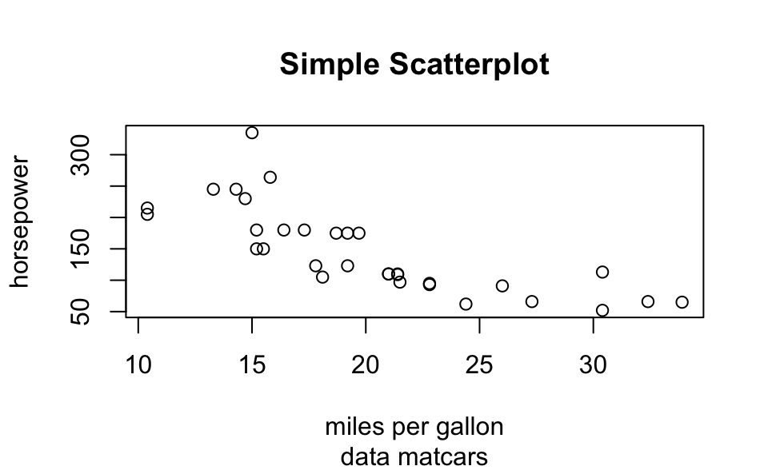
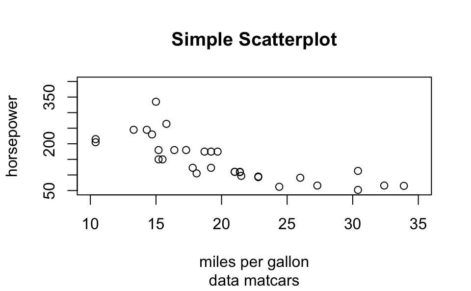

14 Base Graphics
R comes with many functions that let us produce a wide variety of graphics, plots, diagrams, charts, maps, … you name it.
In this chapter we’ll describe the traditional system to produce plots using
functions from the underlying package "graphics".
14.1 Basics of Graphics in R
The package "graphics" is the traditional system; it provides functions for
complete plots, as well as low-level facilities.
Many other graphics packages are built on top of "graphics" like "maps",
"diagram", "pixmap", and many more.
Graphics functions can be divided into two main types:
high-level functions produce complete plots, for example
barplot()hist()boxplot()dotchart()
low-level functions add further output to an existing plot
text()points()lines()legend()- etc
About R graphics:
R
"graphics"follow a static, “painting on canvas” model.Graphics elements are drawn, and remain visible until painted over.
For dynamic and/or interactive graphics, R is limited. However, several packages have been (and continue to be) developed in order to provide more flexibility and interactivity.
14.2 The plot() function
plot() is the most important high-level function in traditional graphics
The first argument to
plot()provides the data to plotThe provided data can take different forms: e.g. vectors, factors, matrices, data frames.
To be more precise,
plot()is a generic functionYou can create your own
plot()method function
In its basic form, we can use plot() to make graphics of:
one single variable
two variables
multiple variables
14.3 Traditional Graphics in R
In the traditional model, we create a plot by first calling a high-level function that creates a complete plot, and then we call low-level functions to add more output if necessary
Consider the data set mtcars (a few rows shown below)
head(mtcars)
mpg cyl disp hp drat wt qsec vs am gear carb
Mazda RX4 21.0 6 160 110 3.90 2.620 16.46 0 1 4 4
Mazda RX4 Wag 21.0 6 160 110 3.90 2.875 17.02 0 1 4 4
Datsun 710 22.8 4 108 93 3.85 2.320 18.61 1 1 4 1
Hornet 4 Drive 21.4 6 258 110 3.08 3.215 19.44 1 0 3 1
Hornet Sportabout 18.7 8 360 175 3.15 3.440 17.02 0 0 3 2
Valiant 18.1 6 225 105 2.76 3.460 20.22 1 0 3 1Let’s start with a scatterplot of hp (horse power) and mpg (miles per
gallon). Perhaps the most common way to get this graph is with the high-level
function plot()
# simple scatter-plot
plot(mtcars$mpg, mtcars$hp)We can specify values for its large number of arguments. For instance, we
can set better axis names with xlab and ylab
# x-axis and y-axis labels
plot(mtcars$mpg, mtcars$hp,
xlab = "miles per gallon",
ylab = "horsepower")Likewise, we can add a title with the main argument:
# title and subtitle
plot(mtcars$mpg, mtcars$hp,
xlab = "miles per gallon", ylab = "horsepower",
main = "Simple Scatterplot", sub = 'data matcars')
Or we can change the range of x-axis as well as the range of the y-axis
with xlim and ylim, respectively:
# 'xlim' and 'ylim'
plot(mtcars$mpg, mtcars$hp,
xlab = "miles per gallon", ylab = "horsepower",
main = "Simple Scatterplot", sub = 'data matcars',
xlim = c(10, 35), ylim = c(50, 400))
Here’s a more sophisticated example
# using plot()
plot(mtcars$mpg,
mtcars$hp,
xlim = c(10, 35),
ylim = c(50, 400),
xlab = "miles per gallon",
ylab = "horsepower",
main = "Simple Scatterplot",
sub = "data matcars",
pch = 1:25,
cex = 1.2,
col = "blue")14.4 Low-Level Functions
High and Low level functions
Usually we call a high-level function
Most times we change the default arguments
Then we call low-level functions
Example:
# simple scatter-plot
plot(mtcars$mpg, mtcars$hp)
# adding text
text(mtcars$mpg, mtcars$hp, labels = rownames(mtcars))
# dummy legend
legend("topright", legend = "a legend")
# graphic title
title("Miles Per Galon -vs- Horsepower")Another example:
# simple scatter-plot
plot(mtcars$mpg, mtcars$hp, type = "n",
xlab = "miles per gallon", ylab = "horsepower")
# grid lines
abline(v = seq(from = 10, to = 30, by = 5), col = 'gray')
abline(h = seq(from = 50, to = 300, by = 50), col = ' gray')
# plot points
points(mtcars$mpg, mtcars$hp, pch = 19, col = "blue")
# plot text
text(mtcars$mpg, mtcars$hp, labels = rownames(mtcars),
pos = 4, col = "gray50")
# graphic title
title("Miles Per Galon -vs- Horsepower")14.4.1 Low-level functions
| Function | Description |
|---|---|
points() |
points |
lines() |
connected line segments |
abline() |
straight lines across a plot |
segments() |
disconnected line segments |
arrows() |
arrows |
rect() |
rectangles |
polygon() |
polygons |
text() |
text |
symbols() |
various symbols |
legend() |
legends |
Lines
x <- 2005:2015
y <- c(81, 83, 84.3, 85, 85.4, 86.5, 88.3,
88.6, 90.8, 91.1, 91.3)
plot(x, y, type = 'n', xlab = "Time", ylab = "Values")
lines(x, y, lwd = 2)
title(main = "Line Graph Example")14.4.1.1 Drawing Line Segments
n <- 11
theta <- seq(0, 2 * pi, length = n + 1)[1:n]
x <- sin(theta)
y <- cos(theta)
v1 <- rep(1:n, n)
v2 <- rep(1:n, rep(n, n))
plot(x, y, type = 'n')
segments(x[v1], y[v1], x[v2], y[v2])Drawing Polygons
mpg_dens <- density(mtcars$mpg)
plot(mpg_dens, main = "Kernel Density Curve")
polygon(mpg_dens, col = 'gray')Drawing Text
plot(0.5, 0.5, xlim = c(0, 1), ylim = c(0, 1), type = 'n')
abline(h = c(.2, .5, .8),
v = c(.5, .2, .8), col = "lightgrey")
text(0.5, 0.5, "srt = 45, adj = c(.5, .5)",
srt = 45, adj = c(.5, .5))
text(0.5, 0.8, "adj = c(0, .5)", adj = c(0, .5))
text(0.5, 0.2, "adj = c(1, .5)", adj = c(1, .5))
text(0.2, 0.5, "adj = c(1, 1)", adj = c(1, 1))
text(0.8, 0.5, "adj = c(0, 0)", adj = c(0, 0))